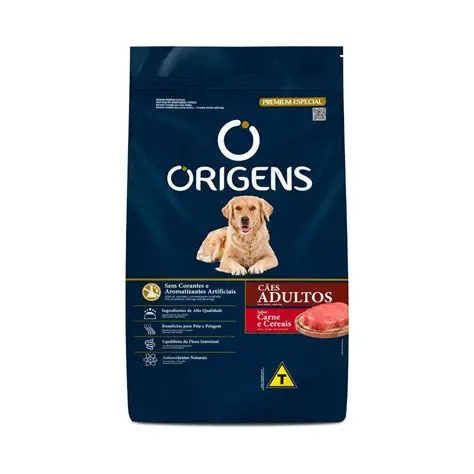
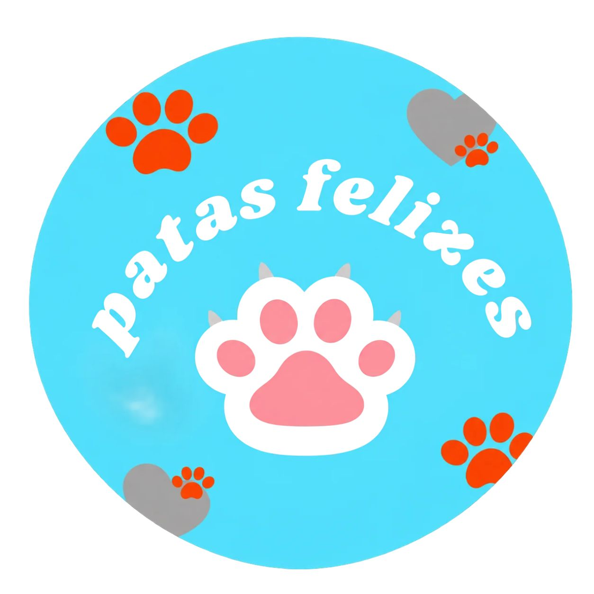
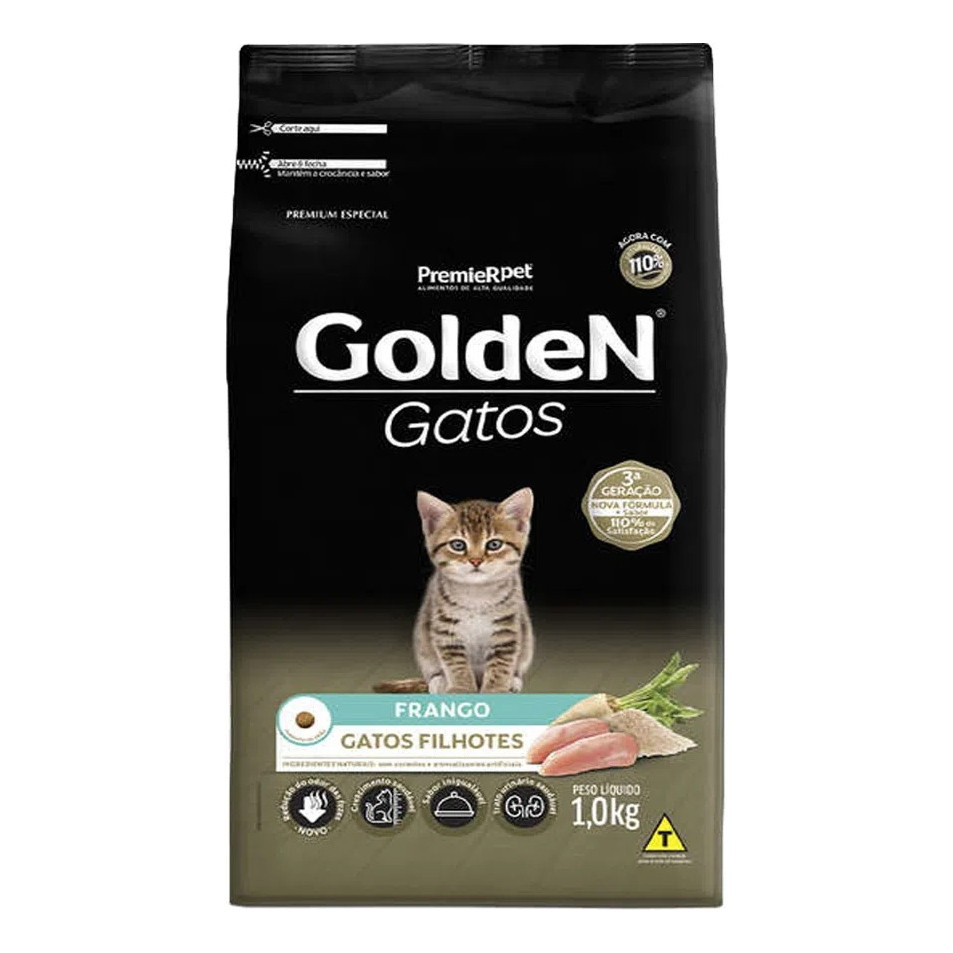
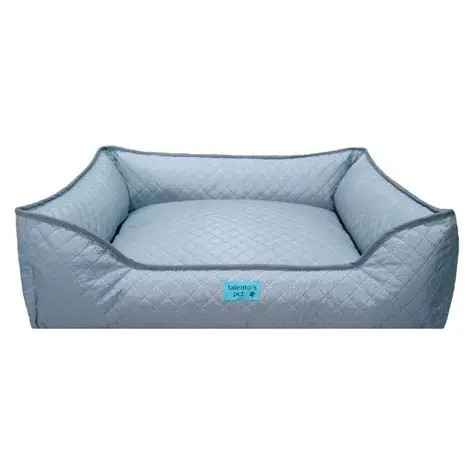
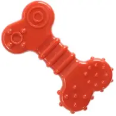
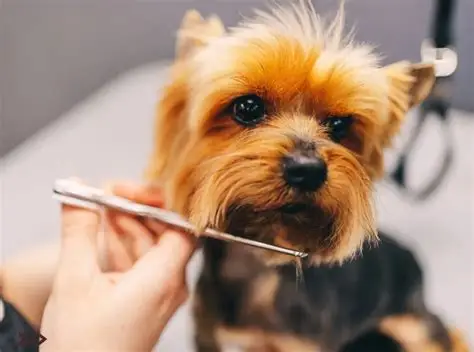
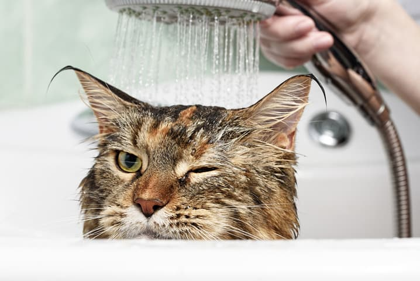

Ração para cão adulto 3kg
Alimento seco completo para cães adultos.
Alimento diário de 3kg para cães adultos.
R$ 65,00

Patas FelizesBanho, tosa, hidratação e cuidados especiais para deixar seu pet sempre feliz e bem cuidado.
Agendar banho e tosa
Alimento seco completo para cães adultos.
Alimento diário de 3kg para cães adultos.
R$ 65,00

Ração seca para gatos.
Embalagem de 1 kg voltada para gatos no dia a dia.
R$ 30,00
Coleira com regulagem para o dia a dia do pet.
Modelo com regulagem para adaptar ao tamanho do seu pet.
R$ 25,00

Cama confortável para pets de porte médio.
Opção de descanso pensada para pets de porte médio.
R$ 90,00

Mordedor para distração e atividade do pet.
Item para morder e entreter o pet nas horas de brincadeira.
R$ 15,00

Serviço para cães de porte pequeno.
Cuidado de higiene e tosa direcionado a cachorros de porte pequeno.
R$ 40,00
Serviço para cães de porte médio.
Atendimento de banho e tosa feito para cães de porte médio.
R$ 70,00

Serviço de banho e tosa para gatos.
Serviço de banho e tosa adaptado para felinos.
R$ 50,00
O pet shop pertence à Cláudia, uma mulher apaixonada por animais que dedicou 10 anos de sua trajetória profissional ao trabalho em uma clínica veterinária. Durante esse período, adquiriu experiência e conhecimento, fortalecendo ainda mais seu amor e sua dedicação aos cuidados com os pets. Hoje, ela traz toda essa vivência para o seu negócio, tendo como propósito oferecer carinho, atenção e cuidado especial a cada animal.
Pix, dinheiro e cartão.
Mande sua mensagem e agende os cuidados do seu pet diretamente pelo WhatsApp!